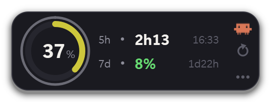
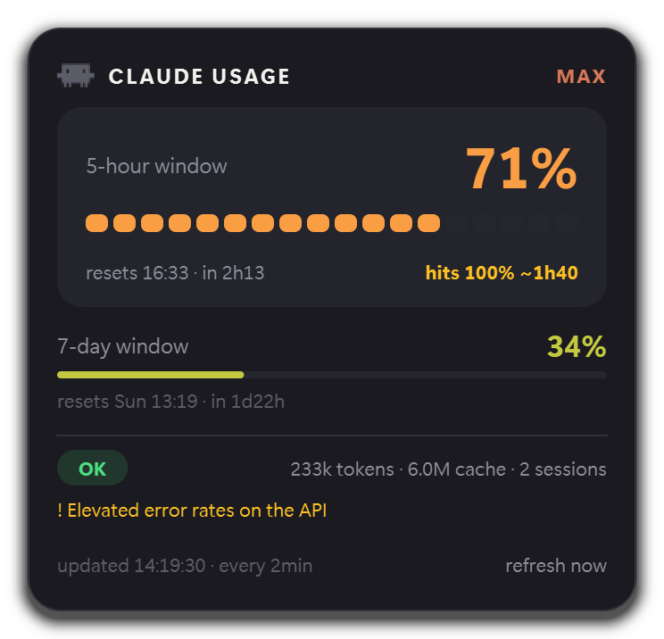

windows · macos · linux
Your Claude Code limits, where you can see them.
A floating widget that reads the rate-limit headers Claude Code already receives, and tells you how much of the five-hour window is gone before it stops you.
Free and MIT licensed. Nothing to configure: it reads the credentials Claude Code already wrote.
Running, not a screenshot. The collection interval is compressed so you can watch a cycle.
anthropic-ratelimit-unified-*
The number was always in the response. Nobody was reading it.
There is no usage endpoint for subscription accounts. Utilization rides along in the headers of any reply, so the widget sends the smallest request that exists — one output token — purely to read them.
HTTP/1.1 200 OK
content-type: application/json
anthropic-ratelimit-unified-5h-utilization: 37
anthropic-ratelimit-unified-5h-reset: 1757001000
anthropic-ratelimit-unified-7d-utilization: 8
anthropic-ratelimit-unified-status: allowed- 37%of the five-hour window, on the gauge
- 3h20until it resets, counted down every second
- 8%of the weekly window, on the second row
- OKthe status chip, and which window binds first
Nothing to configure
The token comes from wherever Claude Code put it — a file on Windows and Linux, the login keychain on macOS — and is re-read every cycle. When Claude Code refreshes it, the widget follows on its own.
Real token counts
The headers only carry percentages. The absolute numbers exist only in the transcripts on your disk, so those are read straight off it — no second account, no telemetry, nothing leaves the machine.
two surfaces
A glance, and the whole story.


releases
Pick your machine.
Every build is unsigned, so each system objects in its own way. The note under each one says how to get past it.
Requires Claude Code to have been signed in once on the same machine. A SHA-256 is published beside every file.
or from source
git clone https://github.com/lucasmaziero/claude-usage-widget
cd claude-usage-widget
uv sync
uv run claude-usage